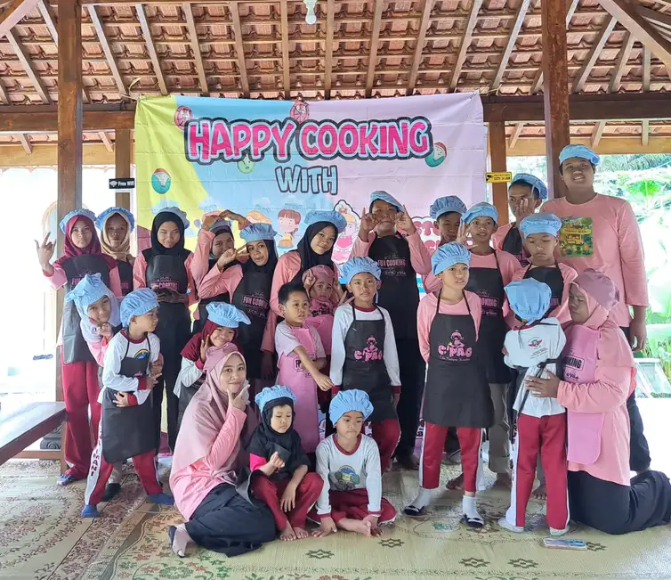

Indonesia memiliki jutaan anak berkebutuhan khusus yang memerlukan perhatian dan dukungan khusus. Berdasarkan data publik yang tersedia, dan Kementerian Sosial, diperkirakan terdapat lebih dari 1,6 juta anak berkebutuhan khusus di Indonesia. Sayangnya, tidak semua dari mereka mendapatkan akses pendidikan dan layanan sosial yang memadai. Di sinilah yayasan sosial anak berkebutuhan khusus memainkan peran yang sangat krusial dalam menjembatani kesenjangan tersebut.
Keberadaan yayasan sosial yang fokus pada anak berkebutuhan khusus (ABK) bukan sekadar pelengkap sistem kesejahteraan sosial negara, melainkan menjadi garda terdepan dalam memberikan layanan langsung kepada anak-anak istimewa ini dan keluarganya. Artikel ini akan membahas secara komprehensif tentang peran vital yayasan sosial untuk ABK, bagaimana memilih yayasan yang tepat, serta cara Anda dapat berkontribusi untuk masa depan mereka yang lebih cerah.
Daftar Isi
- 1. Pengertian dan Jenis Anak Berkebutuhan Khusus
- 2. Peran Strategis Yayasan Sosial untuk ABK
- 3. Layanan yang Diberikan Yayasan Sosial ABK
- 4. Tantangan yang Dihadapi Yayasan Sosial ABK
- 5. Cara Memilih Yayasan Sosial ABK yang Kredibel
- 6. Cara Berkontribusi untuk Yayasan Sosial ABK
- 7. YUKA: Yayasan Sosial ABK di Yogyakarta
Pengertian dan Jenis Anak Berkebutuhan Khusus
Sebelum membahas lebih jauh tentang yayasan sosial anak berkebutuhan khusus, penting untuk memahami terlebih dahulu siapa yang dimaksud dengan anak berkebutuhan khusus (ABK). ABK adalah anak-anak yang memiliki karakteristik khusus yang berbeda dari anak pada umumnya, baik dalam aspek fisik, mental, emosional, maupun sosial. Mereka memerlukan pendekatan pembelajaran dan pendampingan yang disesuaikan dengan kebutuhan unik mereka.
Berdasarkan klasifikasi yang umum digunakan dalam dunia pendidikan dan kesehatan, anak berkebutuhan khusus dapat dikategorikan ke dalam beberapa jenis:
1. Tunanetra (Gangguan Penglihatan)
Anak dengan gangguan penglihatan, mulai dari low vision hingga kebutaan total. Mereka memerlukan alat bantu khusus seperti huruf Braille, audio book, atau software pembaca layar untuk mendukung proses belajar.
2. Tunarungu (Gangguan Pendengaran)
Anak dengan gangguan pendengaran yang mempengaruhi kemampuan komunikasi verbal. Mereka biasanya menggunakan bahasa isyarat dan memerlukan pendampingan khusus dalam berkomunikasi.
3. Tunagrahita (Disabilitas Intelektual)
Anak dengan kemampuan intelektual di bawah rata-rata yang disertai keterbatasan dalam fungsi adaptif. Mereka memerlukan kurikulum yang disesuaikan dengan tingkat kemampuan kognitifnya.
4. Tunadaksa (Disabilitas Fisik)
Anak dengan gangguan fungsi gerak atau fisik yang memerlukan alat bantu mobilitas dan aksesibilitas lingkungan yang ramah disabilitas.
5. Autisme (Autism Spectrum Disorder)
Anak dengan gangguan perkembangan yang mempengaruhi komunikasi sosial dan perilaku. Pendampingan anak autis memerlukan pendekatan yang sangat personal dan konsisten.
6. ADHD (Attention Deficit Hyperactivity Disorder)
Anak dengan gangguan pemusatan perhatian dan hiperaktivitas yang memerlukan strategi pembelajaran khusus untuk membantu mereka fokus.
7. Kesulitan Belajar Spesifik (Disleksia, Diskalkulia, Disgrafia)
Anak dengan kesulitan belajar dalam bidang tertentu seperti membaca, berhitung, atau menulis, meskipun memiliki kecerdasan normal atau di atas rata-rata.

Peran Strategis Yayasan Sosial untuk Anak Berkebutuhan Khusus
Yayasan sosial anak berkebutuhan khusus memiliki peran yang sangat strategis dalam ekosistem pelayanan sosial dan pendidikan di Indonesia. Berikut adalah beberapa peran kunci yang dijalankan oleh yayasan sosial ABK:
1. Menyediakan Layanan Pendidikan Alternatif
Salah satu peran utama yayasan sosial ABK adalah menyediakan layanan pendidikan inklusi bagi anak-anak yang mungkin tidak dapat mengakses sekolah reguler. Yayasan sosial seringkali menyelenggarakan sekolah khusus, homeschooling terstruktur, atau program pendidikan non-formal yang disesuaikan dengan kebutuhan anak.
Di Indonesia, banyak anak berkebutuhan khusus yang tidak tertampung di sekolah luar biasa (SLB) negeri karena keterbatasan daya tampung. Yayasan sosial hadir untuk mengisi kekosongan ini dengan menyediakan pendidikan berkualitas yang terjangkau atau bahkan gratis bagi keluarga kurang mampu.
2. Memberikan Layanan Terapi dan Rehabilitasi
Banyak anak berkebutuhan khusus memerlukan terapi rutin seperti terapi wicara, terapi okupasi, fisioterapi, atau terapi perilaku. Yayasan sosial ABK seringkali menyediakan layanan terapi ini dengan biaya yang lebih terjangkau dibandingkan klinik swasta, atau bahkan gratis untuk keluarga yang tidak mampu.
3. Mendampingi dan Memberdayakan Keluarga
Memiliki anak berkebutuhan khusus adalah perjalanan yang penuh tantangan bagi orang tua dan keluarga. Yayasan sosial ABK berperan dalam memberikan dukungan psikologis, edukasi parenting, dan membangun komunitas sesama orang tua ABK yang saling mendukung.
Tahukah Anda?
Menurut penelitian, orang tua yang tergabung dalam komunitas sesama orang tua ABK memiliki tingkat stres yang lebih rendah dan kemampuan coping yang lebih baik dalam menghadapi tantangan sehari-hari.
4. Melakukan Advokasi dan Sosialisasi
Yayasan sosial ABK juga berperan dalam melakukan advokasi hak-hak anak berkebutuhan khusus kepada pemerintah dan masyarakat. Mereka aktif dalam menyuarakan pentingnya aksesibilitas, pendidikan inklusif, dan perlindungan sosial bagi ABK.
Selain itu, yayasan sosial juga melakukan sosialisasi kepada masyarakat umum untuk mengurangi stigma dan diskriminasi terhadap anak berkebutuhan khusus. Edukasi publik ini sangat penting untuk menciptakan masyarakat yang inklusif.
5. Mempersiapkan Kemandirian dan Masa Depan ABK
Yayasan sosial ABK yang komprehensif tidak hanya fokus pada pendidikan akademik, tetapi juga mempersiapkan anak-anak untuk hidup mandiri di masa depan. Ini termasuk pelatihan keterampilan hidup (life skills), pelatihan vokasional, dan bahkan pendampingan untuk memasuki dunia kerja.

Layanan yang Diberikan Yayasan Sosial Anak Berkebutuhan Khusus
Yayasan sosial anak berkebutuhan khusus yang komprehensif biasanya menyediakan berbagai layanan terintegrasi untuk memenuhi kebutuhan holistik anak dan keluarganya. Berikut adalah layanan-layanan yang umumnya tersedia:
Layanan Pendidikan
- Sekolah Luar Biasa (SLB): Pendidikan formal dengan kurikulum khusus untuk berbagai jenis kebutuhan khusus
- Sekolah Inklusi: Pendidikan di mana ABK belajar bersama dengan anak reguler dengan dukungan khusus
- Homeschooling Terstruktur: Program pendidikan berbasis rumah dengan kurikulum yang disesuaikan
- Program Kesetaraan (Paket A, B, C): Pendidikan non-formal yang ijazahnya diakui setara dengan pendidikan formal
- Program Persiapan Sekolah: Intervensi dini untuk anak usia prasekolah
Layanan Terapi dan Kesehatan
- Terapi Wicara: Untuk anak dengan gangguan komunikasi dan bahasa
- Terapi Okupasi: Untuk meningkatkan kemampuan motorik halus dan kemandirian
- Fisioterapi: Untuk anak dengan gangguan fisik atau motorik kasar
- Terapi Perilaku (ABA, TEACCH): Khusus untuk anak dengan autisme
- Terapi Sensori Integrasi: Untuk anak dengan gangguan pemrosesan sensorik
- Konseling Psikologi: Untuk anak dan keluarga
Layanan Pengembangan Keterampilan
- Pelatihan Keterampilan Hidup: Memasak, kebersihan diri, pengelolaan uang
- Pelatihan Vokasional: Keterampilan kerja seperti menjahit, memasak, berkebun, kerajinan
- Program Magang: Pengalaman kerja di lingkungan sesungguhnya
- Pelatihan Soft Skills: Komunikasi, kerja tim, manajemen waktu
Layanan Dukungan Keluarga
- Parenting Class: Edukasi bagi orang tua tentang cara mendampingi ABK
- Support Group: Kelompok dukungan sesama orang tua ABK
- Konseling Keluarga: Untuk mengatasi stres dan dinamika keluarga
- Home Visit: Kunjungan ke rumah untuk pendampingan langsung
"Setiap anak istimewa memiliki potensi yang menunggu untuk dibangunkan. Tugas kita adalah menemukan kunci yang tepat untuk membuka potensi tersebut." - Filosofi pendidikan inklusi
Tantangan yang Dihadapi Yayasan Sosial Anak Berkebutuhan Khusus
Meskipun memiliki peran yang sangat penting, yayasan sosial anak berkebutuhan khusus menghadapi berbagai tantangan dalam menjalankan misinya:
1. Keterbatasan Pendanaan
Sebagian besar yayasan sosial ABK mengandalkan donasi dari masyarakat dan sponsor. Pendanaan yang tidak menentu seringkali menjadi hambatan dalam menyediakan layanan berkualitas dan mengembangkan program. Banyak yayasan yang kesulitan untuk membayar gaji yang layak bagi tenaga ahli seperti terapis dan guru khusus.
2. Keterbatasan Sumber Daya Manusia
Tenaga profesional yang memiliki keahlian dalam menangani anak berkebutuhan khusus masih sangat terbatas di Indonesia. Terapis, psikolog, dan guru khusus ABK memiliki jumlah yang tidak sebanding dengan kebutuhan. Hal ini menyebabkan banyak yayasan kesulitan dalam merekrut dan mempertahankan tenaga ahli.
3. Stigma Masyarakat
Stigma negatif terhadap anak berkebutuhan khusus masih cukup kuat di sebagian masyarakat Indonesia. Hal ini mempengaruhi dukungan masyarakat terhadap yayasan sosial ABK dan juga menghambat proses inklusi anak-anak ke dalam masyarakat.
4. Keterbatasan Infrastruktur
Banyak yayasan sosial ABK yang beroperasi dengan fasilitas yang terbatas. Kebutuhan akan ruang terapi yang memadai, alat bantu pembelajaran, dan aksesibilitas gedung seringkali tidak dapat dipenuhi karena keterbatasan dana.
5. Regulasi dan Birokrasi
Proses perizinan dan regulasi yang rumit terkadang menjadi hambatan bagi yayasan sosial dalam mengembangkan program atau mendapatkan pengakuan dari pemerintah. Hal ini juga mempengaruhi akses yayasan terhadap program bantuan pemerintah.

Cara Memilih Yayasan Sosial ABK yang Kredibel
Bagi orang tua yang ingin menitipkan anaknya atau bagi donatur yang ingin menyalurkan bantuan, memilih yayasan sosial anak berkebutuhan khusus yang kredibel sangatlah penting. Berikut adalah beberapa kriteria yang perlu diperhatikan:
1. Legalitas dan Izin Operasional
Pastikan yayasan memiliki badan hukum yang jelas (akta notaris), terdaftar di Kementerian Hukum dan HAM, serta memiliki izin operasional dari instansi terkait seperti Dinas Sosial atau Dinas Pendidikan. Legalitas ini menjamin akuntabilitas dan profesionalisme yayasan.
2. Track Record dan Reputasi
Cari informasi tentang sejarah dan rekam jejak yayasan. Berapa lama telah beroperasi? Apa saja pencapaiannya? Bagaimana testimoni dari orang tua dan komunitas? Yayasan dengan track record yang baik biasanya memiliki jaringan dan pengakuan dari berbagai pihak.
3. Kualifikasi Tenaga Pendidik dan Terapis
Perhatikan kualifikasi dan pengalaman para tenaga profesional yang bekerja di yayasan. Apakah mereka memiliki latar belakang pendidikan yang relevan? Apakah mereka mengikuti pelatihan dan sertifikasi yang diperlukan?
4. Program dan Kurikulum
Evaluasi program dan kurikulum yang ditawarkan. Apakah sesuai dengan kebutuhan anak Anda? Apakah ada assessment awal untuk menentukan program yang tepat? Apakah ada evaluasi berkala untuk memantau perkembangan anak?
5. Transparansi dan Akuntabilitas
Yayasan yang kredibel biasanya memiliki sistem pelaporan yang transparan, baik untuk orang tua maupun donatur. Mereka bersedia memberikan laporan perkembangan anak secara berkala dan laporan penggunaan donasi yang dapat dipertanggungjawabkan.
6. Fasilitas dan Lingkungan
Kunjungi langsung lokasi yayasan untuk melihat kondisi fasilitas dan lingkungan belajar. Apakah bersih, aman, dan kondusif untuk perkembangan anak? Apakah memiliki aksesibilitas yang memadai untuk anak dengan disabilitas fisik?
7. Pendekatan dan Nilai
Pahami pendekatan dan nilai-nilai yang dianut yayasan. Apakah selaras dengan nilai keluarga Anda? Apakah mereka menggunakan pendekatan yang positif dan berbasis kasih sayang dalam mendampingi anak?
Tips Penting
Sebelum memutuskan, lakukan kunjungan langsung ke yayasan, berbicara dengan pengurus dan tenaga pendidik, serta jika memungkinkan, berbincang dengan orang tua lain yang anaknya sudah lebih dulu bergabung.
Cara Berkontribusi untuk Yayasan Sosial Anak Berkebutuhan Khusus
Anda tidak harus menjadi orang kaya atau profesional di bidang pendidikan khusus untuk dapat berkontribusi bagi yayasan sosial anak berkebutuhan khusus. Ada banyak cara untuk berpartisipasi:
1. Donasi Finansial
Donasi dalam bentuk uang adalah dukungan paling fleksibel yang dapat digunakan yayasan untuk berbagai kebutuhan, mulai dari operasional harian hingga pengembangan program. Anda dapat melakukan donasi rutin bulanan atau donasi insidental sesuai kemampuan.
2. Donasi Barang
Yayasan sosial ABK seringkali membutuhkan berbagai perlengkapan seperti alat tulis, buku, mainan edukatif, alat terapi, peralatan kebersihan, makanan, dan lain-lain. Pastikan untuk menghubungi yayasan terlebih dahulu untuk mengetahui kebutuhan spesifik mereka.
3. Menjadi Relawan
Jika Anda memiliki waktu luang, menjadi relawan adalah cara yang sangat bermakna untuk berkontribusi. Anda bisa membantu dalam kegiatan pembelajaran, mengajar keterampilan khusus yang Anda miliki, membantu administrasi, atau mengorganisir acara fundraising.
4. Berbagi Keahlian (Pro Bono)
Jika Anda memiliki keahlian profesional, Anda dapat menawarkan jasa secara pro bono. Misalnya, akuntan dapat membantu audit keuangan, desainer grafis dapat membantu materi promosi, atau psikolog dapat memberikan konseling gratis.
5. Menyebarkan Informasi
Membantu menyebarkan informasi tentang yayasan sosial ABK melalui media sosial atau dari mulut ke mulut juga merupakan kontribusi yang berharga. Semakin banyak orang yang tahu, semakin besar peluang yayasan untuk mendapatkan dukungan.
6. Corporate Social Responsibility (CSR)
Jika Anda memiliki bisnis atau bekerja di perusahaan, Anda dapat mengusulkan yayasan sosial ABK sebagai mitra CSR perusahaan. Kerjasama dengan perusahaan dapat memberikan dukungan yang signifikan dan berkelanjutan.
7. Mengadopsi Program
Beberapa yayasan menawarkan program "adopsi" di mana donatur dapat secara khusus mendukung satu anak atau satu program tertentu. Ini memberikan hubungan yang lebih personal dan memungkinkan Anda untuk melihat dampak langsung dari kontribusi Anda.

YUKA: Contoh Yayasan Sosial ABK di Yogyakarta
Salah satu contoh yayasan sosial anak berkebutuhan khusus yang beroperasi di Indonesia adalah Yayasan Ukhuwah Kaffah Amanatullah (YUKA) yang berlokasi di Sleman, Yogyakarta. YUKA adalah lembaga sosial, pendidikan, dan dakwah yang berfokus pada pendampingan anak berkebutuhan khusus dengan pendekatan yang holistik dan berbasis nilai-nilai Islam.
Profil Singkat YUKA
YUKA didirikan berdasarkan kesadaran akan pentingnya memberikan pendidikan dan pendampingan yang layak bagi anak berkebutuhan khusus, khususnya dari keluarga kurang mampu. Dengan tagline "Melejitkan potensi tumbuh kembang anak", YUKA berkomitmen untuk membantu setiap anak menemukan dan mengembangkan potensi terbaiknya.
Program dan Layanan YUKA
- Sekolah Inklusi Taruna Imani: Pendidikan formal dengan kurikulum adaptif untuk anak berkebutuhan khusus
- Program Tahfidz Al-Qur'an: Pembinaan hafalan Al-Qur'an dengan metode yang disesuaikan
- Pelatihan Keterampilan: Program pemberdayaan untuk persiapan kemandirian
- Pendampingan Keluarga: Dukungan untuk orang tua dan keluarga ABK
Kisah Sukses
Salah satu kisah inspiratif dari YUKA adalah Ilham, seorang anak berkebutuhan khusus yang berhasil menghafal 30 juz Al-Qur'an dan kini telah mandiri dengan usaha produksi telur asin. Kisah Ilham membuktikan bahwa dengan pendampingan yang tepat, setiap anak berkebutuhan khusus dapat mencapai prestasi luar biasa.
Nilai-Nilai YUKA
YUKA menjalankan programnya berdasarkan empat nilai fundamental: Shiddiq (jujur), Amanah (dapat dipercaya), Tabligh (menyampaikan), dan Fathonah (cerdas). Nilai-nilai ini menjadi pedoman dalam setiap interaksi dengan anak-anak dan keluarga.
Informasi YUKA
Alamat: Jl. Kronggahan Raya II, RT 04 RW 07, Trihanggo, Gamping, Sleman (Utara RSA UGM)
Telepon/WhatsApp: +62 812-2991-2332
Website: yukaindonesia.com
Kesimpulan
Yayasan sosial anak berkebutuhan khusus memiliki peran yang sangat vital dalam memastikan setiap anak istimewa mendapatkan hak-haknya, terutama hak atas pendidikan dan perkembangan yang optimal. Melalui berbagai layanan yang disediakan, yayasan sosial ABK tidak hanya membantu anak-anak berkembang, tetapi juga mendukung keluarga dan membangun masyarakat yang lebih inklusif.
Tantangan yang dihadapi yayasan sosial ABK memang tidak sedikit, namun dengan dukungan dari berbagai pihak - pemerintah, masyarakat, dan sektor swasta - tantangan tersebut dapat diatasi. Setiap kontribusi, sekecil apapun, memiliki dampak yang berarti bagi masa depan anak-anak berkebutuhan khusus.
Jika Anda tertarik untuk berkontribusi atau ingin mengetahui lebih lanjut tentang yayasan sosial anak berkebutuhan khusus, jangan ragu untuk menghubungi yayasan-yayasan yang beroperasi di daerah Anda. Bersama-sama, kita dapat menciptakan dunia yang lebih baik untuk semua anak, tanpa terkecuali.
"Sebaik-baik manusia adalah yang paling bermanfaat bagi manusia lainnya." - HR. Ahmad, Thabrani, Daruqutni
Mari bergabung dalam kebaikan. Donasi sekarang untuk membantu anak-anak berkebutuhan khusus meraih masa depan yang lebih cerah, atau hubungi kami untuk informasi lebih lanjut tentang cara berkontribusi.
Pertanyaan yang Sering Diajukan (FAQ)
Apa itu anak berkebutuhan khusus?
Menurut Kemenkes Yankes dengan merujuk Panduan Kementerian PPPA, anak berkebutuhan khusus (ABK) adalah anak yang mengalami keterbatasan atau keluarbiasaan baik fisik, mental-intelektual, sosial, maupun emosional yang berpengaruh signifikan dalam proses tumbuh kembang dibandingkan anak seusianya. ABK bukan penyakit menular, melainkan kondisi yang dipicu beragam faktor.
Apa hak anak berkebutuhan khusus?
ABK memiliki hak yang sama dengan anak pada umumnya: hak hidup, pengasuhan layak, pendidikan, kesehatan, dan akses fasilitas umum. UU No. 8 Tahun 2016 menjamin hak-hak penyandang disabilitas secara komprehensif, termasuk hak atas perlindungan hukum dan aksesibilitas.
Bagaimana cara mendukung anak berkebutuhan khusus?
Dukungan utama datang dari keluarga: penerimaan, stimulasi, dan pendampingan konsisten. Selanjutnya akses layanan profesional (dokter anak, terapis, psikolog, sekolah inklusi/SLB). Masyarakat juga berperan dengan tidak diskriminatif dan menyediakan lingkungan inklusif. Kemenkes Ayo Sehat menyediakan kumpulan referensi resmi untuk keluarga dan pendidik.
Apakah anak berkebutuhan khusus bisa mandiri saat dewasa?
Banyak ABK yang dapat hidup mandiri saat dewasa, terutama jika mendapat intervensi dini, pendidikan inklusif, terapi yang tepat, dan dukungan keluarga konsisten. Tingkat kemandirian berbeda tiap anak tergantung jenis dan derajat kebutuhan khusus. Hindari ekspektasi tunggal: rayakan setiap kemajuan, dampingi sesuai kebutuhan.
Kapan harus mulai konsultasi tenaga profesional untuk ABK?
Sedini mungkin, idealnya begitu orang tua atau guru menemukan tanda-tanda perkembangan tidak seperti anak seusianya. Intervensi dini (usia 0-6 tahun) adalah masa kritis perkembangan saraf. Konsultasi dengan dokter anak, psikolog perkembangan, atau ahli tumbuh kembang adalah langkah pertama yang tepat sebelum mengandalkan informasi mandiri.
Sumber Resmi & Referensi Authoritative
Konten artikel ini diperkuat dengan referensi dari lembaga resmi pemerintah dan organisasi kesehatan internasional:
- UU No. 8 Tahun 2016 tentang Penyandang Disabilitas peraturan.bpk.go.id
- Kemenkes Ayo Sehat: Kumpulan Link Penting untuk Anak Disabilitas ayosehat.kemkes.go.id
- Kemenkes Yankes: Hak Anak Berkebutuhan Khusus keslan.kemkes.go.id
- Kemdikbudristek: Panduan Pelaksanaan Pendidikan Inklusif (2022) repositori.kemendikdasmen.go.id
Disclaimer Medis & Pendidikan: Artikel ini bersifat edukasi umum dan bukan pengganti konsultasi profesional. Untuk diagnosis, asesmen, atau penanganan anak berkebutuhan khusus, silakan konsultasikan langsung dengan dokter anak, psikiater anak, psikolog perkembangan, terapis okupasi, atau tenaga ahli pendidikan khusus yang berlisensi. YUKA Indonesia mendukung pendekatan multidisiplin dan tidak menggantikan peran tenaga medis maupun terapis profesional.